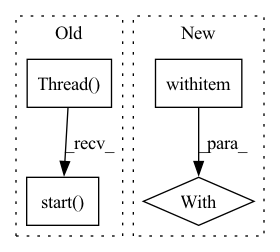

Pattern ID :585

Before Change
protocol, capfd, stop_event, early_teardown
):
flow = Flow(protocol=protocol).add(name="slowExecutor", uses="SlowExecutor")
t = threading.Thread(target=flow_run, args=(flow, stop_event))
t.start()
try:
if early_teardown:
time.sleep(1)
After Change
async def test_gateway_warmup_slow_executor(protocol, capfd):
flow = Flow(protocol=protocol).add(name="slowExecutor", uses="SlowExecutor")
with flow:
// requires high sleep time to account for Flow readiness and properly capture the output logs
time.sleep(SLOW_EXECUTOR_SLEEP_TIME * 3)
out, _ = capfd.readouterr()
assert "recv _status" in out
assert out.count("recv _status") == 1
In pattern: SUPERPATTERN
Frequency: 3
Non-data size: 4
Instances
Fragment ID: 2963437
Project Name: jina-ai/jina
Commit Name: 8e12896ea2baec287e6694454de28fbacefad39d
Time: 2023-03-02
Author: alaeddine-13@live.fr
File Name: tests/integration/runtimes/test_warmup.py
M Class Name: AnonimousClass
N Class Name: AnonimousClass
M Method Name: test_gateway_warmup_slow_executor(2)
N Method Name: test_gateway_warmup_slow_executor(4)
M Parent Class:
N Parent Class:
M File Name: tests/integration/runtimes/test_warmup.py
N File Name: tests/integration/runtimes/test_warmup.py
M Start Line: 62
M End Line: 85
N Start Line: 51
N End Line: 60
'>
Before Change
)
.add(name="slowExecutor", uses="SlowExecutor")
)
t = threading.Thread(target=flow_run, args=(flow, stop_event))
t.start()
try:
if early_teardown:
time.sleep(1)
After Change
.add(name="slowExecutor", uses="SlowExecutor")
)
with flow:
// requires high sleep time to account for Flow readiness and properly capture the output logs
time.sleep(SLOW_EXECUTOR_SLEEP_TIME * 3)
out, _ = capfd.readouterr()
assert "recv _status" in out
assert out.count("recv _status") == 1
'>
Fragment ID: 2963439
Project Name: jina-ai/jina
Commit Name: 8e12896ea2baec287e6694454de28fbacefad39d
Time: 2023-03-02
Author: alaeddine-13@live.fr
File Name: tests/integration/runtimes/test_warmup.py
M Class Name: AnonimousClass
N Class Name: AnonimousClass
M Method Name: test_multi_protocol_gateway_warmup_slow_executor(2)
N Method Name: test_multi_protocol_gateway_warmup_slow_executor(4)
M Parent Class:
N Parent Class:
M File Name: tests/integration/runtimes/test_warmup.py
N File Name: tests/integration/runtimes/test_warmup.py
M Start Line: 110
M End Line: 141
N Start Line: 87
N End Line: 101
'>
Before Change
// checking version info in another thread
import threading
threading.Thread(target=_is_latest_version, daemon=True, args=("jina",)).start()
found_plugin = _try_plugin_command()
if not found_plugin:
_quick_ac_lookup()
After Change
def __exit__(self, exc_type, exc_val, exc_tb):
os.unsetenv(self.key)
with EnvVariableSet("JINA_CHECK_VERSION", "True"):
found_plugin = _try_plugin_command()
if not found_plugin:
_quick_ac_lookup()
'>
Fragment ID: 2963438
Project Name: jina-ai/jina
Commit Name: e57f9524499db19cb1d78312a5c07b523cf759a6
Time: 2022-04-28
Author: jfontanalsmartinez@gmail.com
File Name: cli/__init__.py
M Class Name: AnonimousClass
N Class Name: AnonimousClass
M Method Name: main(0)
N Method Name: main(0)
M Parent Class:
N Parent Class:
M File Name: cli/__init__.py
N File Name: cli/__init__.py
M Start Line: 197
M End Line: 207
N Start Line: 145
N End Line: 155